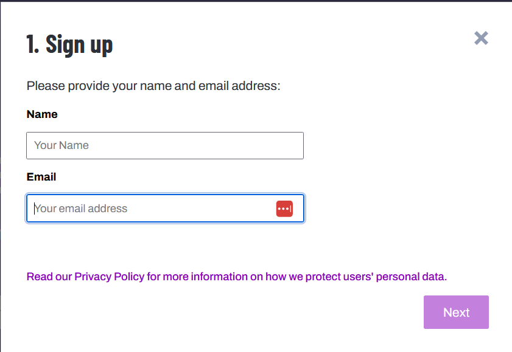

Creating a POSM account
Go to POSM Tasking Manager at: https://workspaces-tasks.sidewalks.washington.edu/
Click sign up
Input the name and email address into the pop-up

If you have an OSM account, click ‘I already have an OpenStreetMap Account' - it will
ask you to sign in to the OSM account, and as a result will sign you into a POSM
account. You are good to go. Otherwise click ‘Create OpenStreetMap account' to make a
new one.
You will be brought to OSM in a new tab. Again, click ‘Signup'

Enter your details for the OSM account
Go back to the original POSM tab and click ‘Log in' in the popup
Enter OSM account details to finish signing into and creating your account
Login to the POSM Tasking Manager at:
https://workspaces-tasks.sidewalks.washington.edu/
Select ‘Explore Projects' in the top menu bar.
Scroll through the page and click a project, and click ‘Contribute'.
Each project is divided into smaller tasks. Select a task polygon and click "Map Selected
Task".
Each task contains a portion of predictions from Prophet V2. These predictions need to
be validated and/or corrected to fit the actual infrastructure, but additional features do
not need to be added at this time.
This will open the Tasking Manager Editor window. The left hand Feature panel shows the
details of a selected feature. You can use the search bar to search for the correct feature
preset to assign to whatever feature is selected. The right hand Task Management panel gives
the status of the task itself. The central Map panel shows the overhead view of the current task
Area.
The toolbar(in purple) along the right edge of the Map panel contains helpful options.
● The top 4 icons are used to navigate the central panel map.
● The 3 squares/burger icon allows you to select the type of overhead imagery to use.
Bing or King County Ortho are both good options.
● The ‘line and square' icon can be used to toggle street view imagery on and off (and
other features outside of this use case)
Feature details and proper placement instructions
There are 3 feature types to be concerned with. These are pedestrian crossings, curb nodes,
and sidewalks. Many of these features have already been created by the Prophet AI, but they
may not be properly aligned.

In this picture, curbs are highlighted with black circles. Footpaths/links are in purple, crossings in red, and sidewalks in green.
Rules For Mapping Pedestrian Crossings
- Crossings describe the path a pedestrian can take to cross a street. These are essential
for connecting the pedestrian network across streets.
- Crossings are lines (ways in OpenStreetMap).
- Crossings are drawn only on the surface of streets; they should not be drawn on top of
sidewalks.
- Crossings should always start and end with curb nodes.
- Crossings are always tagged with "highway=footway, footway=crossing". These tags will
be added automatically by searching for and selecting the ID preset ‘Pedestrian
Crossing' in the Feature panel.

Rules For Mapping Curbs
- Curb nodes (points) should be tagged as "barrier=kerb". This tag will be added
automatically by searching for and selecting the ID preset ‘Curb' in the Feature panel.
- Curb nodes (points) connecting to a crossing should also be tagged according to their
type:
○ kerb=raised/lowered/flush/unknown
○ These ID presets are searchable in the Feature panel (Raised Curb, Lowered
Curb)
○ This denotation should be done after observation on location or by considerable
analysis of streetside imagery
- See further notes below on how curb nodes (points) should be connected to sidewalks.
Rules For Mapping Sidewalks
- Sidewalks describe paths next to and along streets that are dedicated to pedestrians.
- Sidewalks are drawn down the center of the sidewalk path.
- Sidewalk tags can be added by selecting a feature and searching for ID preset
‘Sidewalk' in the Feature panel
- Sidewalks should not be directly connected to crossings or curbs associated with
crossings. Instead, a "link" (described in the next section) should connect them.
- If a crossing is mapped as connected to the sidewalk, without curb information, please
split the line at the edge of the street, then add the Lowered Curb/Raised Curb ID
presets. The resulting line that connects the curb to the sidewalk can be left as a
sidewalk, or it should be tagged as ID preset ‘Foot Path'.
Rules For Mapping Links
- Links describe connections between pedestrian and non-pedestrian spaces that are not
well-described by any identifiable path. In our case, we use links to connect sidewalk
centerlines to crossings, as this path is not geometrically delineated in any way, but
implied.
- Links should connect sidewalk centerlines to crossings.
- Links should have a curb node at one end (shared with the crossing) and a node without
curb tags at the other (shared with the sidewalk).
- Links should be tagged as plain footways (highway=footway) for now. They can be
tagged using the ID preset ‘Foot Path'.
Using Street View Imagery
- We advise that you base your mapping choices on Bing Aerial satellite background
images. You can also use Mapillary and Karta View to access street-side images to help
inform your mapping decisions.
- Use street view options to determine how sidewalks pass under foliage, and if curb
nodes are lowered or not.
- Mapillary and Bing Streetside can be turned on in the main panel's toolbar, under the
‘map' icon, then under ‘photo overlays'

If this is your first time contributing to the OpenSidewalks initiative, please review the
OpenSidewalks Mapping Guide, before proceeding to map.
Example 1
The image below is a raw, unvalidated prediction on a corner curb. Note that the curb points do
not align with the infrastructure and are instead in the street. The curbs are also labeled as
raised when street view indicates otherwise. The sidewalks do not go down the center of the
actual sidewalks, and the crossings do not align with crossing markings.
This is the same area, but corrected. The sidewalks are aligned, the curbs are on the curbs, and
are denoted as lowered curbs. The crossings are correctly placed, and links join the center lines
of the sidewalks with the curbs.
Example 2
Here is another example of an incorrect prediction. See that the horizontal crossings are not
actual places to cross. Some crossings are unmarked and cross roads, but this road is too large
for this. (What is that limit, btw) There are also extra dangling feature points. Remember to just
modify existing features, not add new ones

Now the features have been edited. The incorrectly marked crossings are gone and the nodes
on the right hand sidewalk have been moved to fit the infrastructure. Extra points have been
deleted.
Example 3
How to save edits to dataset
- Save edits by clicking the save button in the top right corner of the Map panel. The
Feature panel will ask you to confirm your changes and allow you to leave a changeset
note. Click the bottom blue save button when you have reviewed the information in the
Feature panel.
How to submit a task
- Even if you didn't get to finish reviewing the entire task polygon, you can close the task.
Either select that the task is complete or still unfinished. If you have any comments to
future mappers attempting this task, leave them in the COMMENT text field.
- The "Submit task" button at the bottom of the Task Management panel on the right side
of the tasking manager will be enabled once you select an option above. Click "Submit
task."
- You can click on ‘Select Another Task' to go back to the project tasks view of the Tasking
Manager, but if you do so before "Submit task" then your interaction with the task will not
be recorded.
Short description
Help us validate Prophet V2 predictions around the NAME Health Through Housing Locations
as part of the #OpenSidewalks #HealthThroughHousing #TCAT project.
Description
"The <a href="https://opensidewalks.com">OpenSidewalks</a> project lead by the <a
href="https://tcat.cs.washington.edu/">Taskar Center for Accessible Technology</a> at the Paul
G. Allen School of Computer Science and Engineering at the University of Washington invites
you to join our efforts to collect pedestrian network data using open-source tools that help us to
document features of the built environment that impact accessibility and inform the design of
solutions for the fulfilment of our collective human experience."
Per Task Instructions
Please correct predictions for the task area by moving the features and re-tagging them as
necessary. See the full instructions for details.
Detailed Task Instructions
There are 3 feature types to be concerned with. These are pedestrian crossings, curb nodes,
and sidewalks. Many of these features have already been created by the Prophet AI, but they
may not be properly aligned.
<h2> Rules For Mapping Pedestrian Crossings</h2>
<ul><li>Crossings describe the path a pedestrian can take to cross a street. These are essential
for connecting the pedestrian network across streets.</li>
<li>Crossings are lines (ways in OpenStreetMap).</li>
<li>Crossings are drawn only on the surface of streets; they should not be drawn on top of
sidewalks.</li>
<li>Crossings should always start and end with curb nodes.</li>
<li>Crossings are always tagged with "highway=footway, footway=crossing". These tags will be
added automatically by searching for and selecting the ID preset ‘Pedestrian Crossing' in the
Feature panel.</li></ul>
<h2> Rules For Mapping Curbs</h2>
<ul><li>Curb nodes (points) should be tagged as "barrier=kerb". This tag will be added
automatically by searching for and selecting the ID preset ‘Curb' in the Feature panel.</li>
<li>Curb nodes (points) connecting to a crossing should also be tagged according to their
type:</li>
<ul><li>kerb=raised/lowered/flush/unknown
<li>These ID presets are again, searchable in the left hand panel (Raised Curb, Lowered
Curb)</li>
<li>This denotation should be done after observation on location or by considerable analysis of
streetside imagery</li></ul>
<li>See further notes below on how curb nodes (points) should be connected to
sidewalks.</li></ul>
<h2> Rules For Mapping Sidewalks</h2>
<ul><li>Sidewalks describe paths next to and along streets that are dedicated to pedestrians.
</li>
<li>Sidewalks are drawn down the center of the sidewalk path.</li>
<li>Sidewalk tags can be added by selecting a feature and searching for ID preset ‘Sidewalk' in
the Feature panel.</li>
<li>Sidewalks should not be directly connected to crossings or curbs associated with crossings.
Instead, a "link" (described in the next section) should connect them.</li>
<li>If a crossing is mapped as connected to the sidewalk, without curb information, please split
the line at the edge of the street, then add the Lowered Curb/Raised Curb ID presets. The
resulting line that connects the curb to the sidewalk can be left as a sidewalk, or it should be
tagged as ID preset ‘Foot Path'.</li></ul>
<h2> Rules For Mapping Links</h2>
<ul><li>Links describe connections between pedestrian spaces and connections between
pedestrian and non-pedestrian spaces that are not well-described by any identifiable path.</li>
<li>In our case, we use links to connect sidewalk centerlines to crossings, as this path is not
geometrically delineated in any way, but implied.</li>
<li>Links should connect sidewalk centerlines to crossings</li>
<li>Links should have a curb node at one end (shared with the crossing) and a node without
curb tags at the other (shared with the sidewalk)</li>
<li>Links should be tagged as plain footways (highway=footway) for now. They can be tagged
using the ID preset ‘Foot Path'.</li></ul>
<h2> Using Street View Imagery</h2>
<ul><li>We advise that you base your mapping choices on Bing Aerial satellite background
images. </li>
<li>You can also use Mapillary and Karta View to access street side images to help inform your
mapping decisions.</li>
<li>Use street view options to determine how sidewalks pass under foliage, and if curb nodes
are lowered or not.</li>
<li>Mapillary and Bing Streetside can be turned on in the main panel's toolbar, under the ‘map'
icon, under ‘photo overlays'</li></ul>
If this is your first time contributing to the OpenSidewalks initiative, please review the
OpenSidewalks Mapping Guide, before proceeding to map.
How to submit a question
1. Take a screenshot of the image / area in question, and paste it here. Add the weblink
you see when you have that area up in the iD editor, like this:
https://workspaces-tasks.sidewalks.washington.edu/projects/19/map/?editor=ID#backgro
und=King_WA_2021&id=w-3&map=20.00/47.31672/-122.31859
2. Describe in words the issue you are facing. The more information you provide the better
it is for us to figure out how to resolve the issue.
Additional Issues identified
In the above picture, there are two issues:
1. The curb node on the right should be plush with the curb, and
2. Move the curb node to the center of the crosswalk so the crossing is more or less in the
center of the crosswalk
In the above picture,
1. The sidewalk on the right should be in the middle of the sidewalk. Mapper should adjust
the linestring to be in the middle of the sidewalk. While doing so, the ‘links' need to be
adjusted as well
2. Curb nodes should be right at the edge of the curbs, not in the middle of the road or the
Sidewalks.
The curb nodes need to be plush with the curb, right now they are more on the sidewalks
Before - wrong - curbs not where they should be | After - corrected curbs & links |
The biggest mistake in the above diagram is the pedestrian crossings that are mentioned
horizontally. As you can see, this is a VERY dangerous place to cross the road. Just
because there are curbs doesn't mean there should be a crossing. These crossings were
added by the mappers, which shouldn't have been added.

Curb nodes need to be placed better in the above diagram
Congratulations, you've completed the guide on how to map